Your Live Music History,
Decoded & Preserved.
Track every show you’ve ever attended with rich discography insights, musician lineup tenures, upcoming tour radars, friend attendance overlaps, and custom guitar-finish themes. Built for music obsessives who value data ownership and privacy.
Live Interface Preview
Experience Setlore's Deep Analytics
Explore how Setlore brings concert lore to life.
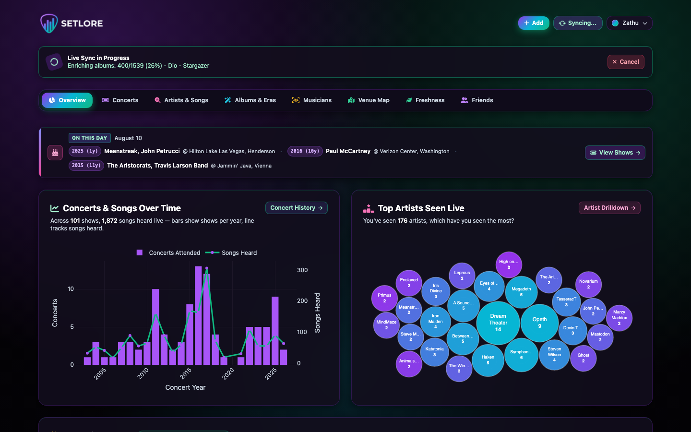
Yearly attendance timeline chart, total artists/venues count, "On This Day" anniversary radar, top bands, and recent shows.
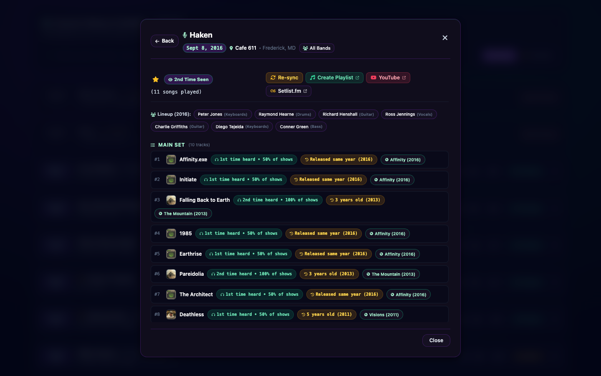
Interactive concert modal with full song setlists, album art previews, and venue details (Haken at Cafe 611).
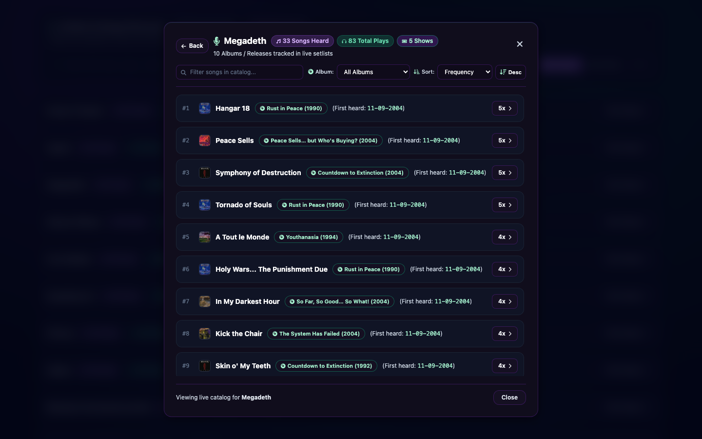
Deep-dive artist modal with catalog performance frequencies, venue histories, and live song counts (Megadeth).
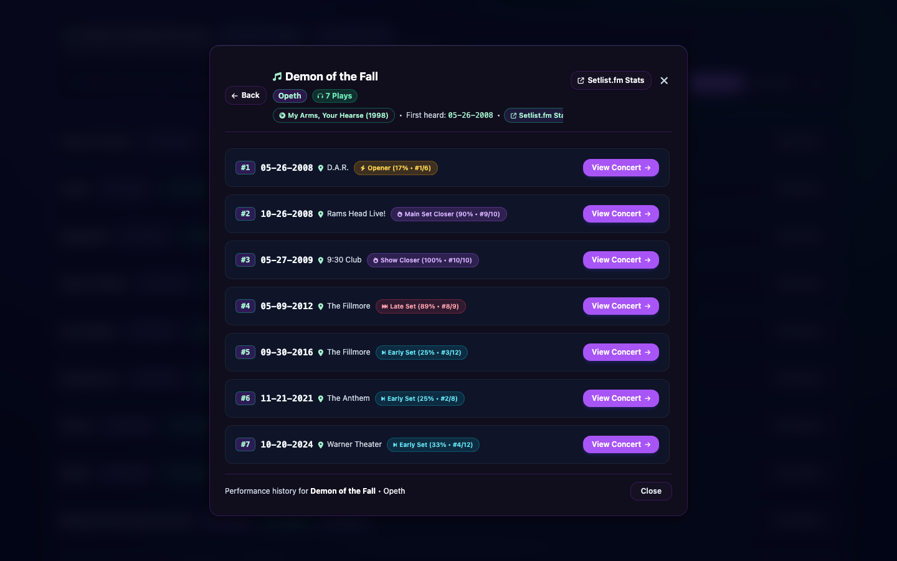
Song drilldown modal detailing every date and venue a track was performed live (Demon of the Fall by Opeth).
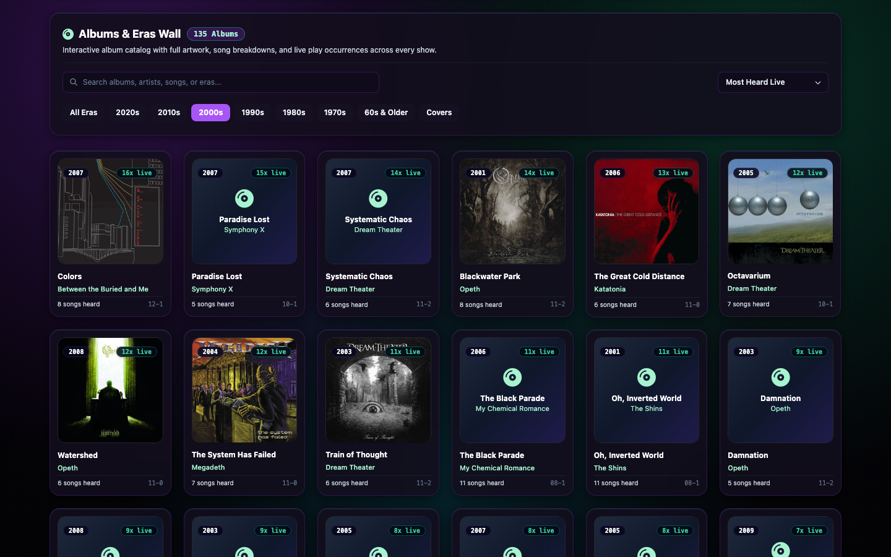
MusicBrainz discography enrichment: studio album distribution treemaps, release decades (2000s era filter), and live set representation.
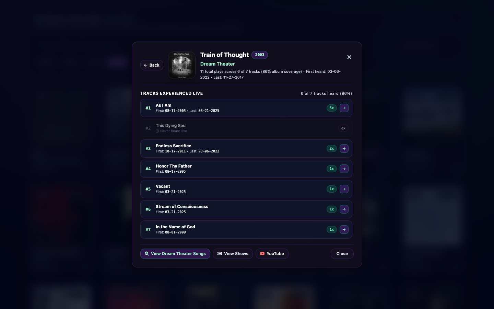
Dedicated studio album modal tracking live track coverage and attended performances (Train of Thought by Dream Theater).
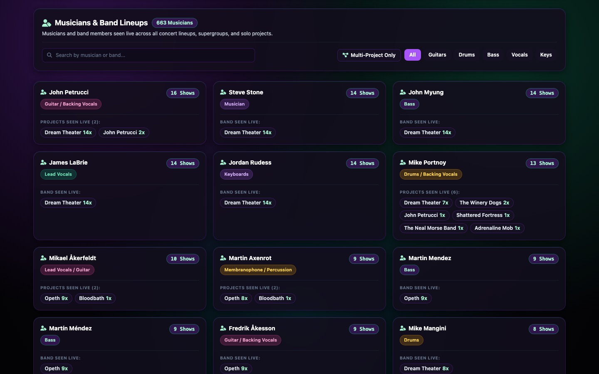
Musician lineup tenure calculations, multi-band artists cross-referencing, and supergroup spotlight matrices.
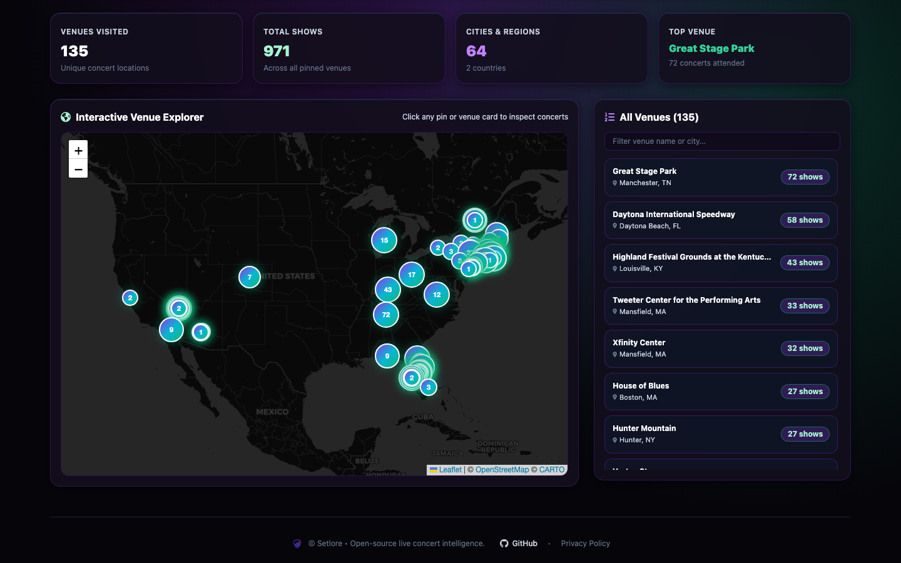
Interactive Carto dark tile venue map powered by Leaflet with geocoded concert pins and artist filtering.
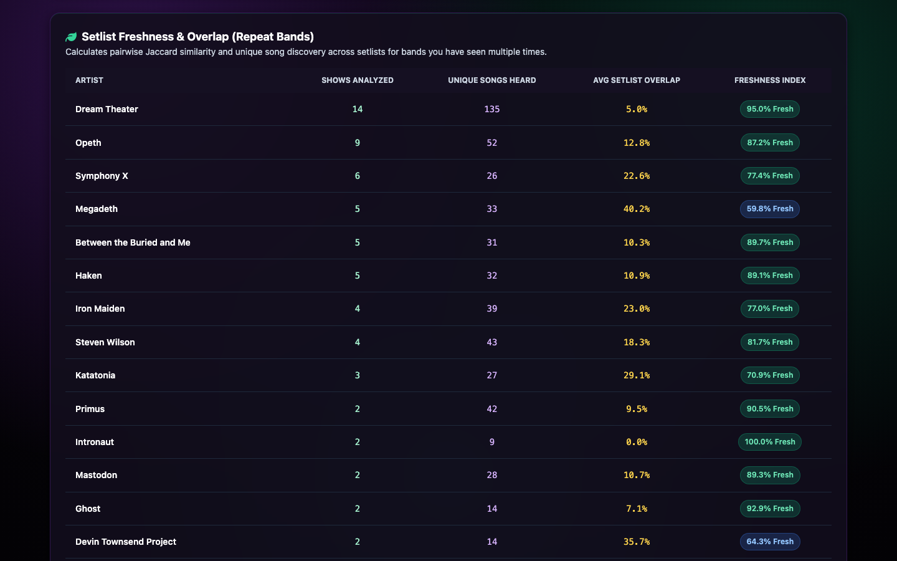
Live rarity audits: songs heard only once, tour debuts, and tracks you haven’t heard live in years.
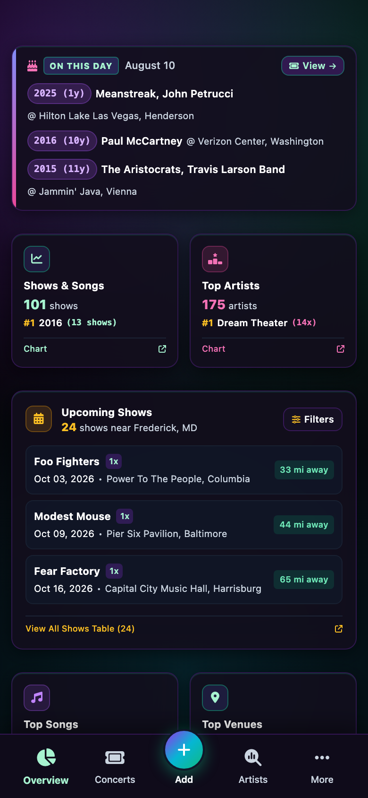
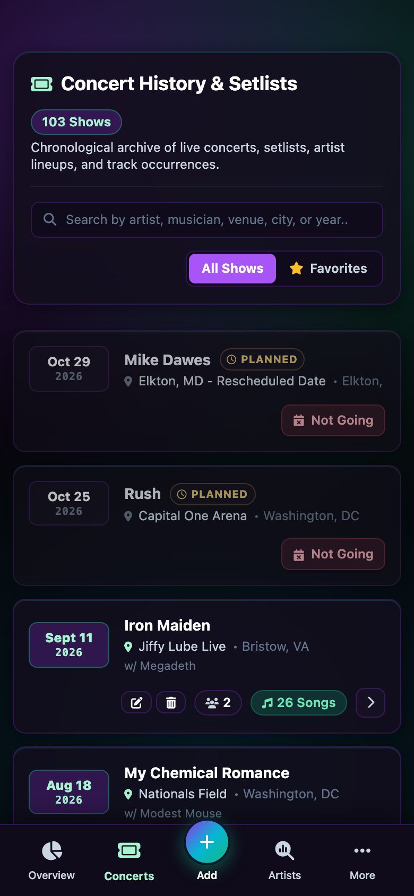
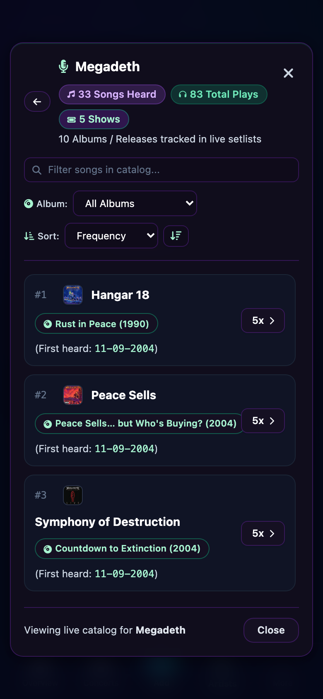
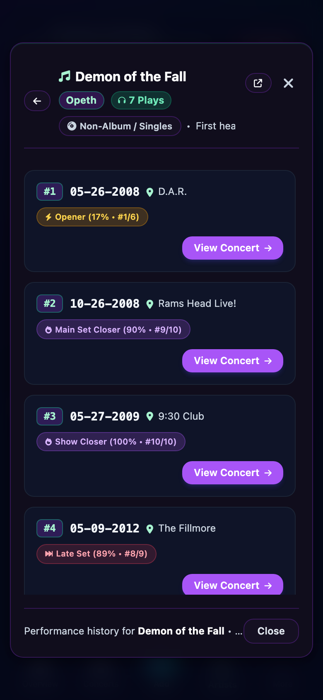
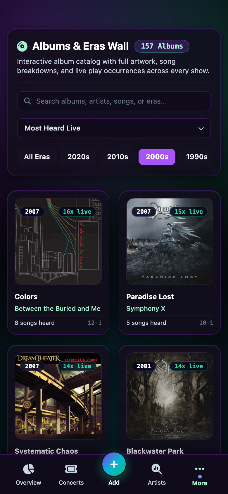
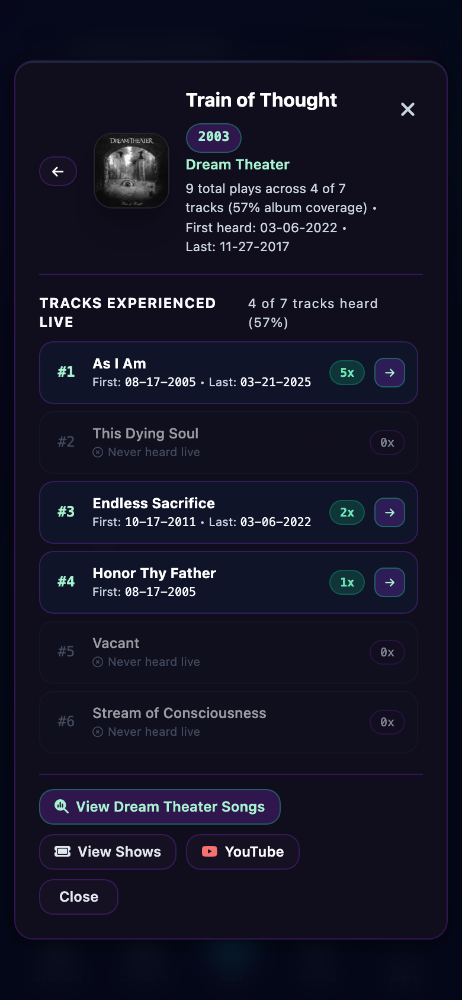
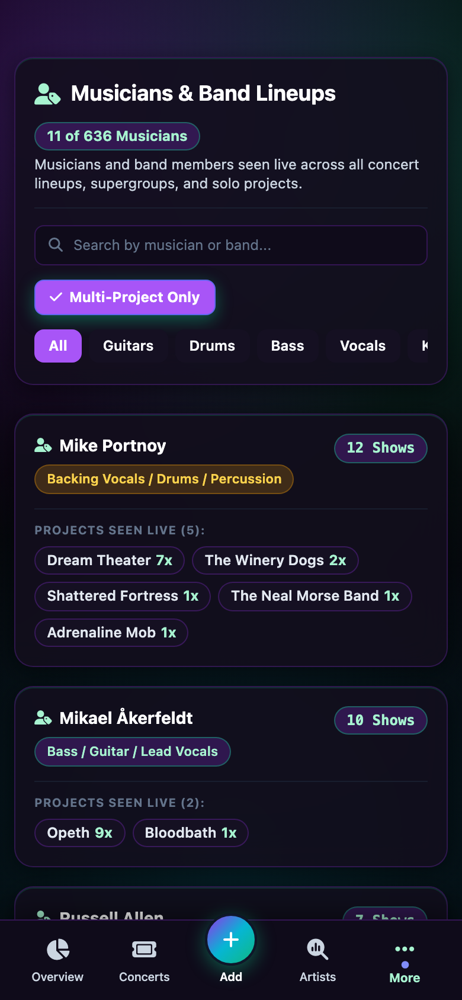
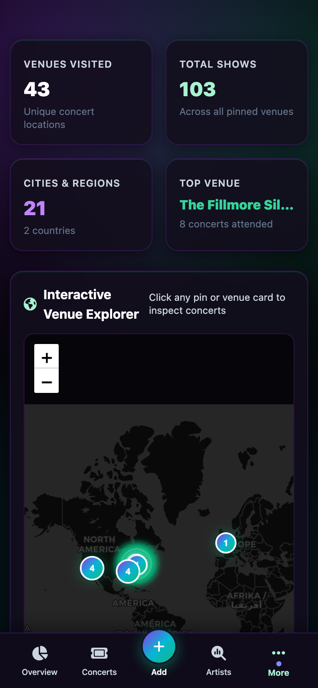
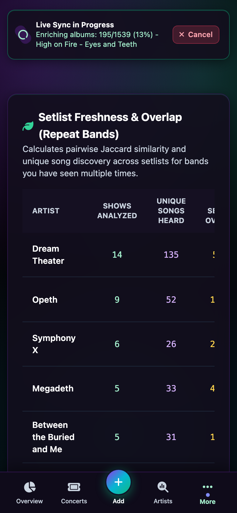
Yearly attendance timeline chart, total artists/venues count, "On This Day" anniversary radar, top bands, and recent shows.
Upcoming Concert & Tour Tracking
Never miss your favorite bands when they come to town. Setlore automatically queries upcoming tour dates for every artist you’ve ever seen live, filtered to your hometown and search radius.
-
Custom Geographic Radius: Set your target coordinates and search within 25, 50, 100, 250, or 500 miles.
-
"I'll Be There" Pre-Tracking: 1-click mark upcoming shows you plan to attend to pre-load them into your dashboard and planning pipeline.
-
Direct Ticket & Venue Links: Instant links to official box offices, venue details, and precise distance calculations.
-
Tailored Artist Filters: Easily hide one-off festival acts or unhide artists anytime to keep your tour radar focused on bands you care about.
Upcoming Tour Radar
Within 100 miles of Washington, DC
40th Anniversary Tour • The Anthem, Washington, DC
Run For Your Lives Tour • CFG Bank Arena, Baltimore, MD
Guitar Inspired Themes
Personalize your concert analytics dashboard with bespoke color schemes created as homages to legendary electric guitar finishes and bursts, with Mystic Dream set as the signature default.
Mystic Dream
DefaultIridescent shift
Purple Nebula
Deep cosmic burst
Red Nebula
Vibrant ruby flame
Cerulean Paradise
Tropical aqua burst
Blue Pearl
Shimmering metallic
Dark Side
Monochrome stealth
Ember Glow
Warm flame maple
Red Pearl Burst
Deep crimson edge
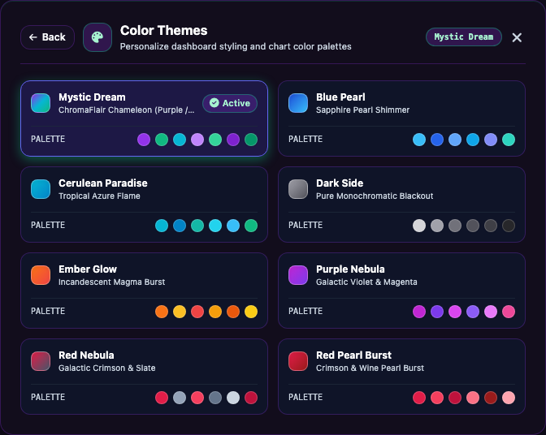
Interactive theme selector modal with real-time CSS property adaptations and monochrome logo filter.
Analytics & Deep Lore
Deep Live Concert Intelligence
Beyond simple check-ins. Setlore dives into lineups, discographies, eras, and geographic road trips.
Musician Lineup & Tenure Tracking
Know who was actually on stage. Setlore calculates historical band rosters by concert date, tracking individual drummers, guitarists, and vocalists across all their side projects and supergroups.
MusicBrainz Discography & Eras
Every song heard live is enriched via MusicBrainz to map studio albums, original release years, and cover flags. Visualized in interactive treemaps, album breakdown matrices, and era timelines.
Interactive Venue Maps
Geocoded venue coordinates powered by Leaflet and Carto dark tiles. Filter your concert travels by artist or era, inspect pin clusters, and revisit your live music road trips across the globe.
Setlist Reconciliation & Audit
Fuzzy matching automatically flags shows missing from Setlist.fm, catches unlinked attended marks, and highlights gaps in your live concert history so your records stay immaculate.
Song Freshness & Debut Tracker
Discover tracks you haven’t heard in years, songs heard for the very first time on a tour, and personal rarest gems across all your favorite artists with deep setlist analytics.
Offline MusicBrainz Dumps
Download and build local SQLite mirrors of complete MusicBrainz artist and release catalogs. Provides lightning-fast offline lookups without external API rate limits.
Effortless Ingestion, Instant Syncing & Portable Exports
Your live music history shouldn’t be locked in a silo or manual chore. Setlore connects to your favorite services and gives you full control over how you import, sync, and export your archives.
-
Two-Way Setlist.fm Syncing: Automatic background worker syncs your attended concerts and matches setlists with rate-limited resilience.
-
Ticketmaster Parser: Copy and paste directly from your Ticketmaster Past Events page to automatically parse dates, venues, support acts, and link setlists.
-
Spreadsheet & CSV Import: Drop your existing spreadsheet (
Date, Band, Venue, City, Notes) and normalize automatically. -
1-Click Full CSV Export: Download your complete concert history, setlists, and venue metadata anytime. Public profiles also feature export endpoints (
/u/username/export/).
@musicfan on Setlist.fm
Connected & Synced
Background worker reconciles your entire attendance history, detects missing setlists, and marks attended shows.
Iron Maiden
Capital One Arena • Washington, DC
Copy and paste directly from your Ticketmaster Past Events page to bulk-import your live concert history without manual typing.
| Date | Band | Venue | Status |
|---|---|---|---|
| 10/22/2024 | Dream Theater | The Anthem | Imported |
| 11/12/2024 | Iron Maiden | Capital One Arena | Imported |
Bring your existing concert tracking spreadsheet and bulk-import your entire history in one go.
Log shows directly on mobile or desktop with venue autocomplete and plaintext setlist paste parsing.
Engineering & Performance
Modern, Pragmatic Tech Stack
Engineered for lightweight self-hosting, responsive analytics, and uncompromising reliability.
Robust MVC web framework with typed database models, case-insensitive authentication backends, and full Django Admin portal for catalog curation.
Single portable db.sqlite3 file mounted on host storage. High-concurrency WAL mode with automatic API caching tables.
Interactive, hardware-accelerated vector charts (yearly attendance timelines, discography sunbursts, treemaps) and customized Carto dark tile venue maps.
Automated rate-limited background ingestion pipelines with persistent caching to prevent IP throttling and ensure seamless syncs.
C++ accelerated Levenshtein string reconciliation to accurately pair handwritten notes and CSV artist names with canonical global setlists.
Ultra-fast virtual environment resolution via Astral’s uv and streamlined single-container Docker Compose deployment.
Self-Host in 60 Seconds
Run your own private instance of Setlore on a home server, Raspberry Pi, or cloud VPS.
# 1. Clone repository & configure environment
git clone https://github.com/cgarst/setlore.git
cd setlore
cp .env.example .env
# 2. Launch container with Docker Compose
docker compose up -d
# 3. Visit http://localhost:8000
Social Concert Intelligence
Compare Concerts & Share With Friends
Live music is better together. Connect with fellow fans to analyze shared shows, compare artist overlap, and share vanity profile links.
Social Show Overlap
Instantly see every concert you attended with friends. Setlore compares date, venue, and artists to calculate exact mutual attendance and show overlap percentage.
Vanity Public Profiles
Share your concert profile via clean vanity URLs (
/u/@username). Toggle privacy on or off anytime with 1 click.Friendship & Approvals
Send and accept friend requests with fellow users on your server. Mutual friendship unlocks access to private concert collections and shared stats.